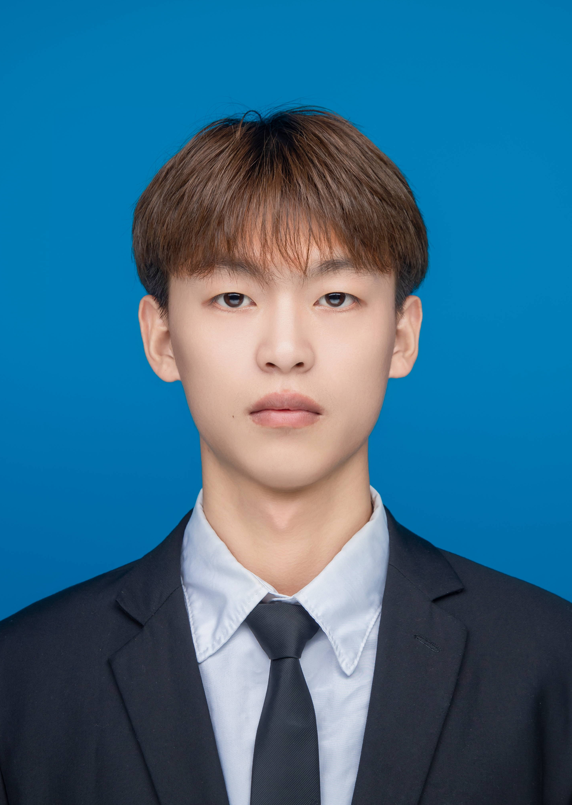

许来丰 应聘岗位：C++开发,Qt开发

教育经历
- 黄山学院 软件工程 2020.09-2024.06
- 主修课程：C语言程序设计、Java、数据结构、Linux环境编程、数据库原理及MYSQL应用
- 基于 C#ASP.NET 程序设计、计算机网络、软件测试技术、网页前端设计等。
项目经验
- 1、WebServer服务器搭建
- 项目描述：为了支持网站的部署、应用程序的运行，实现了静态文件服务，前端页面、后端业务逻辑、网络通信等
- 2、“强核轻装”操作系统
- 项目描述：一款专门为各个旅游景点管理人员提供的封装操作系统，为旅游景点的管理提供技术支持。
- 项目成果：获得第十三届全国大学生电子商务“创新、创意及创业”挑战赛黄山学院校赛一等奖。
- 3、“昆仑银行”APP 手工测试
- 项目描述：本次测试项目为“昆仑银行”APP，该 APP 第一次上线，主要以用户体验测试、bug 探索测试、兼容性测试为主。
- 测试成果：经过本组成员的共同努力，本组共提交缺陷 37 个，其中被确认为缺陷的为 29 个，缺陷确认率为 78.4%。
专业技能
- 具备C/C++开发编程的基本知识，熟悉STL，多线程，网络通信的基础知识。有一定的数据结构和算法基础，了解代码设计、编写、单元测试、测试环境搭建、资料开发等多模块工作。
- 熟练掌握了Qt框架。我能够运用这些技能开发出高效、稳定的应用程序，且具备良好的客户对接能力，可快速达成合作。
- 具有良好的的个人素质和认真的工作态度，以及良好的学习能力。具有较强的问题分析能力和抽象能力，有强烈的求知欲、自驱心和进取心。
- 我对编程充满热情，喜欢不断学习新技术，以提高自己的能力。我相信我的技能和热情将为公司带来巨大的贡献。